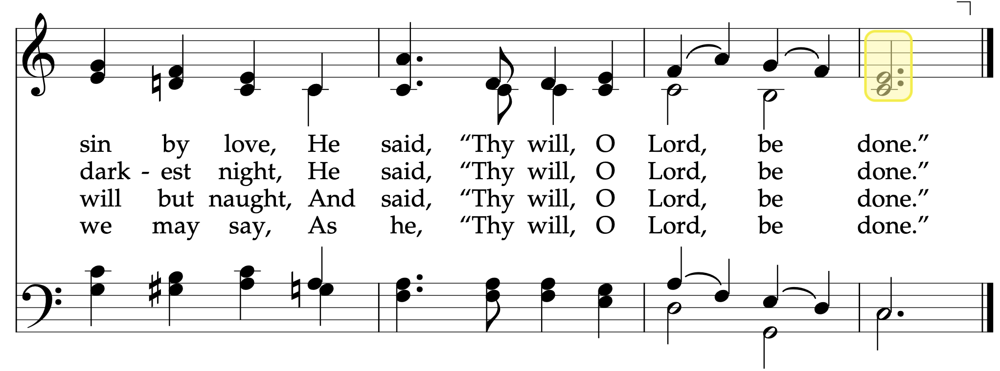
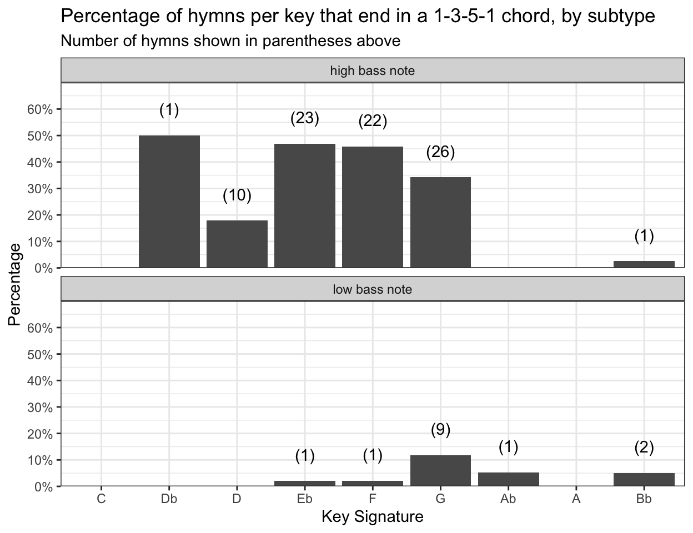

What are the most common final chords?
And everything else you may want to know about final chords!
soprano line
alto line
tenor line
bass line
chords
musicology
How many hymns have melodies that don’t end on the tonic? What parts of the chord does each part tend to sing? How many hymns end on moving lines? What are the most common configurations for final chords and how does that relate to key signatures?
In this post, I do a really deep dive into the final chords of hymns. Everything you’d ever want to know—and a lot of stuff you don’t want to know! First, I look at individual parts and their relationship to the overall chord, and then I look at all the different voicings found in final chords.
Hymns that don’t end on the tonic
First, what hymns have a melody line that does not end of the tonic? By this, I mean that, if a hymn is in the key of G major, are there hymns that do not end on a G? As it turns out, there are 16 of them!
Twelve of these 16 hymns end on the third of the chord. The most common is
Click to see those hymns


The other four hymns end on the fifth of the chord. We get another sacrament hymn,
Click to see those hymns
So, overall, relatively few hymns end on the third or the fifth of the chord, just 4.6% of the hymnal. But, because a few sacrament hymns are on this list, as well as several relatively well-known hymns, it’s not a terribly unusual thing to see. In fact, you’re likely to see one of these 16 hymns about once every six weeks or so.
What part of the chord does each part end on?
Now that we’ve established that the melody typically lands on the root of the chord, let’s look briefly at the other parts. The following figure shows how many hymns end on which note of the scale, with each part on its own plot.
It should come as no surprise that every single bass line ends on the tonic. What is more interesting is the two middle parts. The alto line is nearly evenly split between ending on the tonic, the third note of the scale, or the fifth note of the scale, with a very slight preference for the root. Meanwhile, the tenor line ends on the third 64% of the time, and is otherwise evenly split between the root and the fifth. I’m not quite sure what anyone might do with this information, but it’s interesting to see nonetheless!
Overall, if you were to sing all four parts of all the hymns (again, excluding the men’s and women’s arrangements at the back), you’ll end on the tonic 62.7% of the time, the third 25.0% of the time, and the fifth just 12.3% of the time.
Recommendation for the next hymnal
Add fifths to more final chords.
Hymns that end in moving lines
Another ending that is pretty unusual is one where not all four parts sing their final note at the same time. In some hymns, at least one part sustains its last note while at least one other part resolves a chord or moves in some other way. There are eight hymns that do this.
Two of these hymns,
Click to see those hymns
Another type of movement we see is when the four parts land on a tonic chord, but then the tenors and altos move to the subdominant and then back to the tonic. In
I don’t know enough about music theory to say for sure of the penultimate chord in Keep the Commandments (#303) is a subdominant or something else.
Click to see those hymns
Click to see this hymn
Finally, two hymns just do their own thing. In
Again, I don’t know enough about music theory to say what is going on here.
Click to see those hymns

Overall, these eight hymns make up about 2.6% of the hymns sung in sacrament, and most of that is thanks to the sacrament hymn
Final chords
We now turn to the topic of the final chords themselves, rather than individual parts or notes. As established already, all hymns end in a major or minor chord, so the only options are roots, thirds, and fifths of chords. Logically, there are \(3\times 3\times 3\times 3=81\) possible ways to use those three notes, if you ignore octave differences and good musical taste. Of course, the hymnal uses far fewer than that.
Since two of the five hymns set in a minor key end in picardy thirds, there are only two hymns that truly end in a minor chord.
Let me pause briefly to explain the notation I’ll be using. I’ll describe the voicing of the chord using the numbers 1, 3, or 5, from lowest (bass) to highest (soprano). So if we’re in the key of C major, 1-5-3-1 would mean the basses are on a C3, the tenors a G3 above that, the altos on an E4 above that, and the sopranos on a C5 above that. If a part sings in unison with the part below it, I replace its number with an asterisk. This figure shows the twelve configurations found in the hymnal, in order of frequency. Let’s dive into each one of these.
1-3-1-* endings
The most common voicings to end a hymn on is 1-3-1-*. The bass line ends on the tonic, the tenor a third above, and the alto and soprano lines in unison on the root of the chord (an octave higher). The most common non-sacrament hymn to end on this voicing is
Almost all the hymns that fit this 1-3-1-* description look just like
Because there are 97 hymns that are voiced as 1-3-1-*, I’m not going to show all of them, but here is a plot that shows the most common ones and how often they are sung in a year.
If we just look at the key signatures of the hymns that fall into this category, we get pretty much all of them. But when we arrange those key signatures in order, we see a pretty clear pattern. Basically, the key of D major is the ideal key to end with this chord, and the closer a key signature is to D, the more likely it is to also use this chord. For keys further away, you’re less likely to see this voicing. For whatever reason, it’s just not ideal to have a hymn in the key of G end with this voicing.
The lowest version of this voicing are the two hymns in the key of B♭ major,
Click to see those hymns
How often are you likely to see this voicing? Well, since there are 97 hymns that fit this category, including many sacrament hymns, pretty likely. Based on the 17,833 sacrament meetings I have data from, 33.0% of the hymns sung in sacrament meeting use this voicing, which means odds are pretty good that on any given Sunday, you’ll see at least one hymn ending in 1-3-1-*.
1-3-5-1 endings
The 1-3-5-1 ending is basically tied for first place as the most common ending. In its most basic form, it’s a triad with the tonic repeated on top. 96 hymns end with this voicing. One of the most common non-sacrament ones is

83 hymns look just like 1-3-1-*, there is a subtype where the bass note is down an octave, creating a large interval between the bass and tenor notes. A common one is
Again, there are too many hymns that are 1-3-5-1, so I won’t show all of them. But here are plots that show the most common ones and how often they are sung in a year.
If we just look at the key signatures of the hymns that fall into this category, we get 1-3-5-1 endings in most keys. While the 1-3-1-* voicing above appeared to be centered around D major, this one appears to be more common in slightly higher keys. The reason is likely the alto voice: anything lower would put it pretty low. In fact, the one instance in D♭ is in
Click to see those hymns

Looking at the differences between the two types (whethe the bass note is high or low), we see that the low bass note version of 1-3-5-1 is most common among hymns in G major, with just a handful scattered among other keys. The one hymn that uses it in E♭ is 1-3-5-1 final chord in B♭ also results in the highest final note for a tenor part, a D4 in
Click to see those hymns
How often are you likely to see a 1-3-5-1 hymn? Again, there are many of them, including sacrament hymns, so it’s going to be pretty likely. Based on the 17,833 sacrament meetings I have data from, 31.5% of the hymns sung in sacrament meeting use this voicing, which means odds are pretty good that, like 1-3-1-* discussed already, you’ll see at least one hymn ending in 1-3-3-5 on any given Sunday.
1-1-3-1 endings
The next most common way to end a hymn is to use the 1-1-3-1 voicing. The bass, tenor, and soprano line are in three octaves, and the alto line sings the third of the chord below the soprano line. The most common non-sacrament hymn to end on this voicing is
A related ending is the one instance 1-*-1-3 in the hymn
Click to see those hymns
54 hymns end in 1-1-3-1, so again, I’m not going to show all of them, but this plot shows how often the most common ones are sung in a year.
Looking at the key signatures of the hymns that end in this voicing, we see basically the opposite pattern from 1-3-1-* above. The hymns that use the 1-1-3-1 voicing are mostly in the G, A♭, B♭ range.
The lowest iteration of 1-1-3-1 is in F major, which is found in six hymns, three of which are Christmas hymns. The highest version is in C major, as in
Since there are fewer of these hymns, the odds of seeing them is slightly lower. They made up 15.8% of the dataset that I have, so you’ll likely to sing one about every two weeks.
1-5-3-1 endings
The final type of final chord that has a significant presence in the hymnal is 1-5-3-1. It also spans two octaves, like other endings, but the voices are more evenly spaced. In my mind, this is the “Ice Cream” voicing because in The Music Man, it’s the chord that the barbershop quartet sings when Herold Hill is teaching them to sing for the first time and he gets them to sing sustained notes while saying “ice cream.” We see this voicing at the end of 42 hymns, including
I should mention too that
Here are the most common hymns that fit this category, sorted by how often they’re sung per year.
Like the other final chords we’ve examined so far, it seems like there are some key signatures in which they’re more common. In the case of 1-5-3-1, it’s most common in B♭ major and C major, but we do get it in a handful of other keys as well.
The one hymn in the key of E♭ is
Click to see those hymns
Since there are only 42 of these hymns, again, the odds of seeing them is lower. They made up 11.0% of the dataset that I have, so you’ll likely to sing one about every two or three weeks.
Non-tonic soprano final chords
The remaining final chord voices are all pretty unusual and are only found in a handful of hymns. We’ve already seen that 16 hymns end the soprano line something other than the tonic and that all hymns end the bass line on the tonic. Of those 16, there are four different voicings. Here, we’ll ignore briefly the two that don’t have full SATB harmonies.
Nine hymns end with 1-5-1-3: 1-*-1-3 voicing.
I won’t post images of the hymns since these are all shown already.
Of the hymns that have the melody end on the fifth, there are two voicing configurations. Three hymns use the 1-3-1-5 voicing: 1-1-3-5.
Duets and Unisons
A few hymns have specific instructions to sing it as a duet or in unison. I’ll probably do a more thorough treatment of those hymns in a later blog post, but for now, we’ll just focus on how they end.
Though seven hymns begin as duets, five of them go into full harmony partway through. They are 3-1 voicing. The other is 3-5-1).
Finally, we get to the hymns that have at least some portion marked as unison. The hymns
Summary
Sopranos almost always end on the tonic, and basses always do. Altos end on the root, third, or fifth all about equally, while tenors favor the third. A handful of hymns end with at least one moving part. There are four main final chords the hymnbook uses, with most of the exceptions being from non-tonic-ending soprano lines, duets, and unisons. These main four tend to be used more with certain key signatures, summarized in the figure below.
What I think is coolest finding—and maybe this is old news for musicologists and choral arrangers—is that the final chord voicing is somewhat predictable by the key signature. Hymns in the D♭–d range are often 1-3-1-*, hymns in the E♭–G range are often 1-3-5-1, hymns in the A♭–B♭ range are often 1-1-3-1, and while never the majority, hymns in the B♭–C range are often 1-5-3-1.